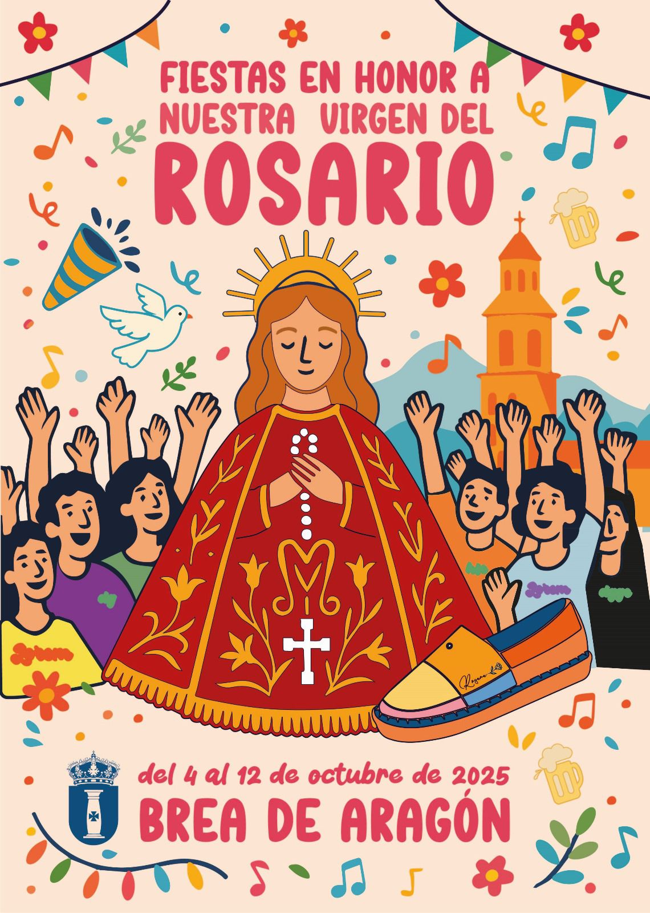

Fiestas Brea de Aragón 2025


Sábado 4 de Octubre 2025 — “Primer Cartucho”
12:00 — ¡Vamos Brean@s! Todos a correr los primeros cabezudos acompañados de la CHARANGA ABLITAS.
15:30 — Chupinazo con la PEÑA EL CHUPINAZO y pancartas de peñas recorriendo el pueblo.
18:00 — Paseíllo de adoración a la Virgen del Rosario y ofrenda floral.
19:30 — Solemnes completas en honor a la Virgen del Rosario.
23:30 — Inauguración de verbenas con hoguera y charanga.
01:15 — Orquesta MAGIA NEGRA, DISCOMÓVIL y DJ HUGO VALERO.
Domingo 5 de Octubre 2025 — “Día de la Virgen del Rosario”
08:10 — Rosario de la Aurora.
08:30 — Misa primera.
11:30 — Misa Mayor en honor a la Virgen del Rosario.
16:00 — Partido CD BREA – UNIÓN DEPORTIVA SAN JOSE en PIEDRABUENA.
19:30 — Rosario general por el pueblo con la Banda Municipal.
23:30 — Verbena en Plaza España.
01:15 — Orquesta NUEVA ALASKA y DISCOMÓVIL con DSEIK DJ.
Lunes 6 de Octubre 2025 — “Que no decaiga”
06:30 — Pasacalles con CHARANGA ABLITAS y almuerzo con chocolate.
08:00 — Primer encierro a cargo de GANADERÍA BARQUERO (Quinto), seguido de becerras en la plaza.
11:00 — Misa de difuntos.
16:00 — Búsqueda de majas acompañados de la charanga.
17:00 — Primera suelta de vacas GANADERÍA HNOS MARCÉN (Villanueva de Gállego) con pausa para bocadillos.
19:00 — Gran rifa benéfica.
23:30 — Verbena en la Pasarela.
01:00 — Música en la zona del Barranco con DJ RODRI.
Martes 7 de Octubre 2025 — “Ellos al mando… por un día”
11:00 — Santa Misa.
12:00 — VAMOS MACHOTES! Salida desde la plaza a PEÑA EL PACHARAN para aperitivo.
12:30 — Vermú Torero por los bares del pueblo.
17:00 — Sesión de vacas GANADERÍA RAÚL IZQUIERDO (Codo).
19:00 — Rifa benéfica.
23:30 — Suelta de burros estilo oeste en Plaza España.
01:00 — Ruta de bares con charanga.
Miércoles 8 de Octubre 2025 — “Reinas de la fiesta”
12:00 — Misa mayor en honor a todas las mujeres Breanas y aperitivo.
14:00 — Comida de la mujer Breana en el pabellón.
16:30 — Paseíllo por la plaza con la charanga.
17:00 — Gran Prix y suelta de vacas GANADERÍA JAVIER SORIA (Longares) con bocadillos.
19:00 — Rifa benéfica.
23:30 — Verbena y Baile del Farolillo.
01:15 — Actuación de “Los Chalanes” flamenco.
Jueves 9 de Octubre 2025 — “Pasión por la peña”
11:00 — Santa Misa.
11:30 — Cabezudos infantiles con charanga.
12:30 — Preparativos para cocinar los ranchos de las peñas.
17:00 — Juegos tradicionales en la plaza.
19:00 — Actuación LETICIA SABATER.
20:30 — Rifa benéfica.
21:00 — Reparto de la vaca en la puerta de la Iglesia.
00:30 — Recorrido por las calles con DJ ALEX.
02:00 — Concierto GRUPO “VERSOPOTAMIA” + DISCOMÓVIL DJ J.VELILLA.
Viernes 10 de Octubre 2025 — “Pequeños, pero fiesteros”
11:00 — Santa Misa.
12:30 — Encierro infantil a cargo de GANADERÍA LA ESTANCA (TAUSTE).
14:00 — Bocadillos en el pabellón.
14:30 — Hinchables para los más pequeños (PARQUE INFANTIL PITUFILANDIA).
16:30 — Salida para buscar a los majicos a la PEÑA STRAGOS.
17:00 — Suelta de vacas GANADERÍA EL RUISEÑOR (Frescano).
19:00 — Rifa benéfica.
00:00 — Primer TORO DE RONDA en Plaza España por EMBOLADORES DE SANTA PANTARIA y suelta de vacas GANADERÍA EL RUISEÑOR.
01:15 — Música en el pabellón con COPACABANA y DISCOMÓVIL (DJ ZAKA y DJ RODRI).
Sábado 11 de Octubre 2025 — “¡Aguanta, que ya queda poco!”
06:30 — Pasacalles con CHARANGA ABLITAS y desayuno en la plaza.
08:00 — Último encierro GANADERÍA BARQUERO (Quinto) y suelta de becerras.
16:00 — Búsqueda de las majas acompañados de la charanga.
17:00 — Penúltima suelta de vaquillas GANADERÍA OLIVA ESCUDERO (Quinto).
19:00 — Rifa benéfica.
19:30 — Suelta de carretones en la plaza para todos los públicos.
00:00 — Segundo TORO DE RONDA por EMBOLADORES DE SANTA PANTARIA y suelta de vaquillas GANADERÍA OLIVA ESCUDERO.
01:15 — Grupo SAUL OLE en el pabellón y DISCOMÓVIL con DJ CATA DANI.
Domingo 12 de Octubre 2025 — “Sabiduría y despedida”
12:30 — Santa Misa y procesión en honor a la Virgen del Pilar.
16:00 — Búsqueda de las majas acompañados de la charanga.
17:00 — Última suelta de vaquillas GANADERÍA ORO VELA (Tabuenca).
19:30 — Actuación en el teatro para mayores con entrega de obsequios.
22:00 — Fuegos artificiales y traca fin de fiestas en Parque del Zapatero.
Fin — Se acabó lo que se daba… ¡ya estamos contando los días para las siguientes fiestas!